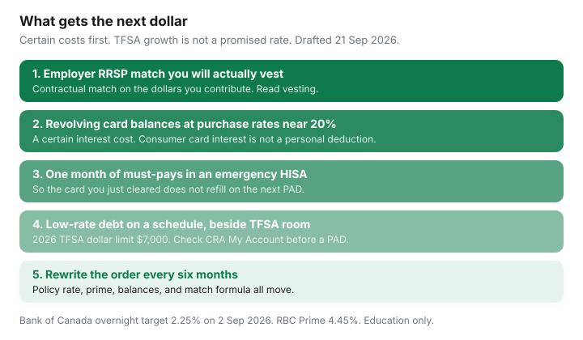

Personal Finance · Canada
Pay Off Debt or Contribute to a TFSA in Canada? A Rate-Gap Decision Framework
The argument stalls households for years: guilt about “not investing” on one side, a 21% card on the other. You do not need a forecast of markets to sort it. You need the interest rate you are contracted to pay, the match your employer will actually deposit, and a cash buffer large enough that the card does not refill. TFSA growth is uncertain. Card interest is not. This is a cash-order framework, not a stock tip and not a reason to empty your emergency fund into a brokerage.
Disclosure: Education only. Not tax, investment, or credit advice. No debt-settlement, payday, or credit-repair offer. Brokerage TFSA accounts are an offer type only if you later meet one; this page does not claim a brokerage partnership. Confirm TFSA room in CRA My Account before any registered transfer.
Key takeaways
- Take the employer match you will vest before you debate TFSA versus extra debt payments. A missed match is a contractual giveaway.
- Revolving card balances at purchase rates around 20.99% (a public RBC benchmark — your agreement governs) come before extra TFSA contributions. That cost is certain. A TFSA has no promised return on this page.
- Keep about one month of must-pays in an emergency HISA so payoff does not bounce back as new card debt.
- A lower-rate line or a mortgage can sit on a written schedule beside TFSA room. The 2026 TFSA dollar limit is $7,000, plus unused room. Same-year recontribution after a withdrawal is how people owe the 1% monthly tax.
- Rewrite the order every six months, and when prime or the policy rate moves.
Compare guaranteed card and line rates with speculative return stories
Personal credit-card interest is a cost. It is not a deduction on a typical employment return. Paying $1,679 of interest on a labelled $8,000 balance at 20.99% for a year is $1,679 you do not get back by hoping a TFSA does something interesting. This page will not invent an “expected market return” to compare with that. If a blog tells you markets beat 21% cards, it is selling a story you cannot contract for. The card issuer already contracted for the 21%.
Variable debt is still a contract, just a moving one. RBC Prime was 4.45% on the bank’s line-of-credit page used 21 Sep 2026, after the Bank of Canada held the overnight target at 2.25% on 2 September 2026. Your line is prime plus the spread in your agreement. A labelled 8.45% line (prime plus a hypothetical 4 points) is a different decision from a 20.99% card. Both numbers belong on one sheet. The sheet is in line of credit versus cards if you are about to move a balance.

Employer RRSP match still comes first when available
A match is not a market forecast. If the booklet says the employer deposits $1 for every $1 you contribute up to 4% of pay, the dollars you fail to contribute are a 100% giveaway on that slice, subject to vesting and to your RRSP room. That sits above both the card debate and the TFSA debate, as long as the payroll deduction does not cause an NSF or a missed minimum. The capture checklist is employer match. Group RRSP contributions generally use your RRSP deduction limit (2026 dollar ceiling $33,810, and your personal room is lower if 18% of last year’s earned income or a pension adjustment says so). A DPSP match creates a pension adjustment and can have a vesting period up to 24 months. Read which vehicle you actually have before you call it free.
High-interest revolving debt usually beats speculative investing
Once the match is captured, aim extra cash at revolving purchase balances. Use a method you will finish — avalanche if you trust yourself, hybrid if you need one small zero first. The labelled arithmetic is in snowball versus avalanche. Cash advances and missed-payment penalty rates are worse than the purchase rate; pay those slices first if your statement splits them.
Do not “invest the refund” into a TFSA while the card that funded last winter is still revolving. The RRSP refund loop is a timing tool (RRSP timing). Pre-commit a refund to the highest-rate balance if that balance exists. A refund that becomes a vacation while the card remains is a lifestyle choice with a 21% carrying cost.
Low-rate debt plus emergency fund gaps: parallel tracks
A household that throws every dollar at a 5% student loan or a mortgage and keeps $200 in chequing will put the next furnace repair on a card. That is how low-rate debt and high-rate debt trade places. Parallel track:
- One month of must-pay bills (rent or mortgage, utilities, insurance, transit, minimums) in an unregistered HISA. Parking choices: emergency fund. CDIC covers eligible deposits up to $100,000 per category per member institution, which matters once the buffer is large, and is beside the point when the buffer is one month.
- A written payment on the low-rate debt that is more than the interest.
- TFSA contributions up to remaining room, automated the business day after payday (TFSA automation). The 2026 dollar limit is $7,000. Room is personal. CRA’s TFSA pages say 2025 records are the useful My Account check from April 2026 onward, and you should still reconcile the issuer’s slips.
| Claim on the dollar | What is certain | Before extra TFSA money? |
|---|---|---|
| Employer match you will vest | The match formula in the booklet | Yes |
| Revolving card purchases | Your agreement; 20.99% is a public benchmark, not your card | Yes |
| One-month bill buffer | The PAD calendar | Yes, a thin one, before you drain cash to zero |
| Line or mortgage on a schedule | Prime plus your spread, or the mortgage contract | Can run beside TFSA room |
| Extra TFSA contribution | Room in My Account. Growth is not promised here | After the rows above are true |
Behavioural risk: investing while carrying very high card rates
The expensive version of this debate is a new TFSA contribution in the same month a card statement shows interest. It feels like a responsible adult. It is financing a contribution at the card rate. If the TFSA holds cash because you are afraid of markets, you have paid 21% to earn a savings rate inside a registered account — and if you withdraw that cash in a job gap, you cannot put it back until 1 January without unused room. CRA charges 1% per month on the highest excess TFSA amount. Withdraw the excess as soon as you see it and file the TFSA return.
Revisit the decision every six months as rates and balances change
Put two dates on the calendar: the day after your mid-year statements, and the week of a Bank of Canada announcement if you carry a variable line. Questions that earn a rewrite: Did the card balance fall? Did the match percent change at a new job? Did TFSA room reset on 1 January? Did you withdraw from the TFSA and forget that room comes back next year? Did Québec’s 5% card minimum (in force 1 August 2025) change what “extra” means because the minimum itself got larger? A framework you do not reread is a screenshot.
Sources & date stamps
- CRA, TFSA dollar limit for 2026 is $7,000; withdrawals add room on 1 January of the next year; excess tax 1% per month (pages used 21 Sep 2026).
- CRA registered-plan limits — 2026 RRSP dollar limit $33,810, a ceiling, not your personal room (as used in the RRSP timing guide on this site, 21 Sep 2026).
- CRA, employer RRSP contributions and DPSP pension adjustments / 24-month vesting (payroll and DPSP pages used 21 Sep 2026).
- Bank of Canada — overnight target 2.25% on 2 September 2026. RBC Prime 4.45% on the line-of-credit page used the same draft day.
- RBC agreement-change notice — standard purchase rate 20.99% on listed retail cards (reviewed 21 Sep 2026; confirm your agreement).
Frequently asked questions
Should I stop all TFSA contributions until I am debt-free?
Stop discretionary TFSA contributions while you are revolving a credit-card purchase balance around 20%. Keep a one-month cash buffer so the card does not refill. Keep an employer match you will vest, because that match is contractual. A low-rate line or a mortgage can run on a schedule beside TFSA room.
Is a TFSA return going to beat my credit card?
This page does not assume a market return. Card interest at a posted purchase rate near 20.99% is a cost you are paying for certain. TFSA growth is not a promised rate, and personal credit-card interest is not a tax deduction. Pay the certain high rate first.
What if I already put the emergency fund inside my TFSA?
CRA restores withdrawn TFSA room on 1 January of the next year, not the week you take the money out. The 2026 dollar limit is $7,000 plus unused room. If a job gap would force a same-year recontribution, the buffer belongs in an unregistered HISA. Excess TFSA amounts are taxed at 1% per month.
Does the employer match still come first if I carry a card balance?
Fund the match you will actually receive and vest, if the payroll deduction will not cause NSF fees or a missed card minimum. Leaving a 100% match on the table to send every dollar to a card is often the larger leak. Read the plan booklet, then resize the other skims.
How often should we redo this?
Every six months, and again when the Bank of Canada moves the policy rate, when prime changes your line, when a balance hits zero, or when the match formula changes. The overnight target was 2.25% on 2 September 2026. The next scheduled decision is 28 October 2026.